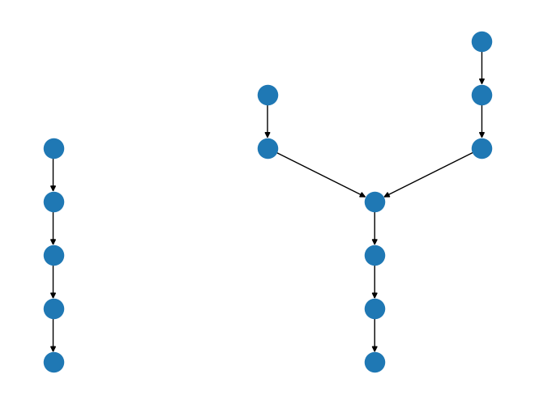
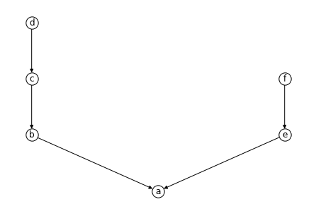
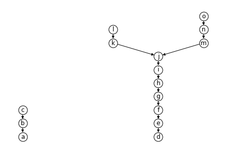

Examples with a chain and a Y-shape
[1]:
import numpy as np
from corsort import *
<frozen importlib._bootstrap>:228: RuntimeWarning: scipy._lib.messagestream.MessageStream size changed, may indicate binary incompatibility. Expected 56 from C header, got 64 from PyObject
We study configurations of the following form: a chain of \(a\) elements, and a Y shape defined as follows: * A chain of \(b\) elements, * Two chains of respectively \(c\) and \(d\) elements just above.
For example:
[2]:
ChainAndY(a=5, b=4, c=2, d=3).draw()

A simple example
[3]:
poset = ChainAndY(0, 1, 3, 2)
poset.draw(with_labels=True, alpha_labels=True)

[4]:
poset.delta
[4]:
array([-5, -1, 1, 3, 0, 2])
[5]:
poset.rho
[5]:
array([Fraction(1, 7), Fraction(2, 5), Fraction(3, 5), Fraction(4, 5),
Fraction(1, 2), Fraction(3, 4)], dtype=object)
[6]:
poset.average_height
[6]:
array([Fraction(1, 1), Fraction(5, 2), Fraction(4, 1), Fraction(11, 2),
Fraction(3, 1), Fraction(5, 1)], dtype=object)
[7]:
print_order(poset.order_delta)
(abecfd)
[8]:
print_order(poset.order_rho)
(abecfd)
[9]:
print_order(poset.order_average_height)
(abecfd)
[10]:
print_order(poset.order_kemeny)
(abecfd)
Looking for a more complex example
[11]:
def is_good_example(a, b, c, d):
poset = ChainAndY(a, b, c, d)
n_nodes = poset.n_nodes
rho = poset.rho
if len(set(rho)) < n_nodes: # Tie in rho
return False
delta = poset.delta
if len(set(delta)) < n_nodes: # Tie in delta
return False
order_rho = poset.order_rho
order_delta = poset.order_delta
if np.array_equal(order_rho, order_delta): # rho and delta agree
return False
normalized_height = poset.average_normalized_height
if len(set(normalized_height)) < n_nodes: # Tie in p
return False
order_average_height = poset.order_average_height
if np.array_equal(order_average_height, order_rho): # p and rho agree
return False
if np.array_equal(order_average_height, order_delta): # p and delta agree
return False
order_kemeny = poset.order_kemeny
if np.array_equal(order_kemeny, order_rho): # kemeny and rho agree
return False
if np.array_equal(order_kemeny, order_delta): # kemeny and delta agree
return False
if np.array_equal(order_kemeny, order_average_height): # kemeny and p agree
return False
return True
[12]:
def find_minimal_example():
n_nodes = 0
results = []
found = False
while not found:
n_nodes += 1
print(f"Testing {n_nodes=}...")
for a in range(n_nodes + 1):
for b in range(n_nodes - a + 1):
remains = n_nodes - a - b
for c in range(remains // 2 + 1):
d = n_nodes - a - b - c
# print(f"Testing {a=}, {b=}, {c=}, {d=}...")
if is_good_example(a, b, c, d):
results.append((a, b, c, d))
found = True
return results
[13]:
results = find_minimal_example()
Testing n_nodes=1...
Testing n_nodes=2...
Testing n_nodes=3...
Testing n_nodes=4...
Testing n_nodes=5...
Testing n_nodes=6...
Testing n_nodes=7...
Testing n_nodes=8...
Testing n_nodes=9...
Testing n_nodes=10...
Testing n_nodes=11...
Testing n_nodes=12...
Testing n_nodes=13...
Testing n_nodes=14...
Testing n_nodes=15...
[14]:
results
[14]:
[(3, 7, 2, 3)]
[15]:
poset = ChainAndY(*results[0])
poset.draw(with_labels=True, alpha_labels=True)

[16]:
for criterion in ['delta', 'rho', 'average_height', 'kemeny']:
print(criterion)
order = getattr(poset, f'order_{criterion}')
print_order(order)
print(poset.kemeny_score(order))
print()
delta
(defghaibjcmknlo)
10.03076923076923
rho
(defaghibjmcknlo)
8.914285714285715
average_height
(defaghibjmkcnlo)
8.661978021978022
kemeny
(deafghibjmknclo)
8.61054945054945
[17]:
poset.delta
[17]:
array([ -2, 0, 2, -11, -9, -7, -5, -3, -1, 1, 6, 8, 5,
7, 9])
[18]:
poset.rho
[18]:
array([Fraction(1, 4), Fraction(1, 2), Fraction(3, 4), Fraction(1, 13),
Fraction(2, 13), Fraction(3, 13), Fraction(4, 13), Fraction(5, 13),
Fraction(6, 13), Fraction(7, 13), Fraction(4, 5), Fraction(9, 10),
Fraction(8, 11), Fraction(9, 11), Fraction(10, 11)], dtype=object)
[19]:
poset.average_normalized_height
[19]:
array([Fraction(1, 4), Fraction(1, 2), Fraction(3, 4), Fraction(1, 13),
Fraction(2, 13), Fraction(3, 13), Fraction(4, 13), Fraction(5, 13),
Fraction(6, 13), Fraction(7, 13), Fraction(9, 13),
Fraction(11, 13), Fraction(17, 26), Fraction(10, 13),
Fraction(23, 26)], dtype=object)